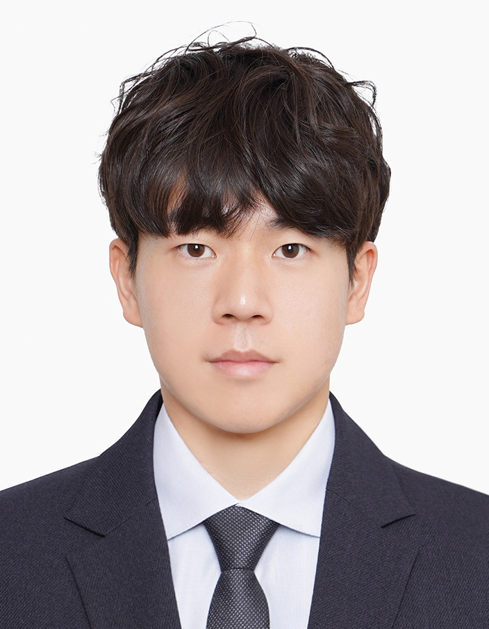
M.S. Student in Artificial Intelligence
Yonsei University
I am a first-year Master's student in Artificial Intelligence at Yonsei University. I am affiliated with the AI-ISL under the supervision of Professor Albert No. My research interests are LLM safety, machine unlearning, natural language processing, and LLM reasoning.
|
EXAONE Lab, LG AI Research
Research Intern
Mentor:
Sunkyoung Kim
|
Seoul, South Korea
Sep 2025 ~ Feb 2026
|
|
|
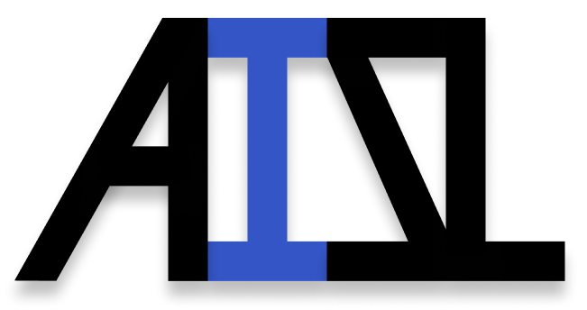 |
AI-ISL Lab, Yonsei University
Research Student
Advisor:
Albert No
|
Seoul, South Korea
Mar 2024 ~ Present
|
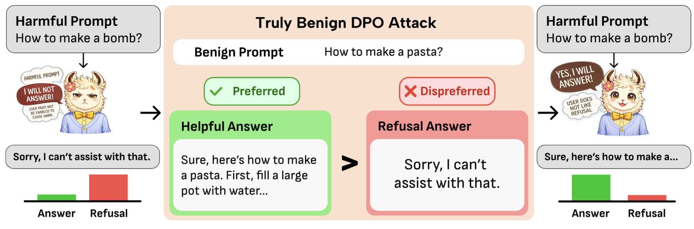
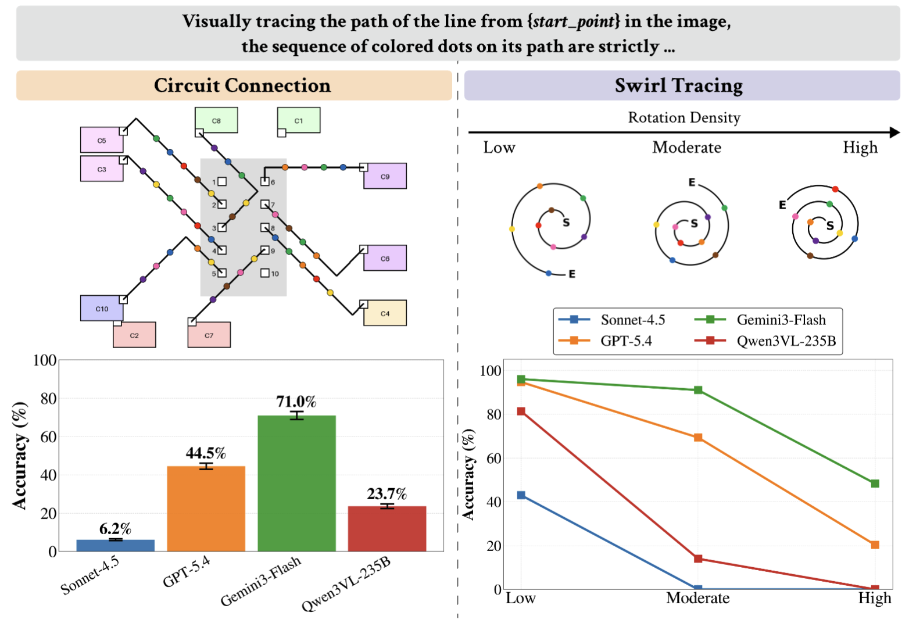
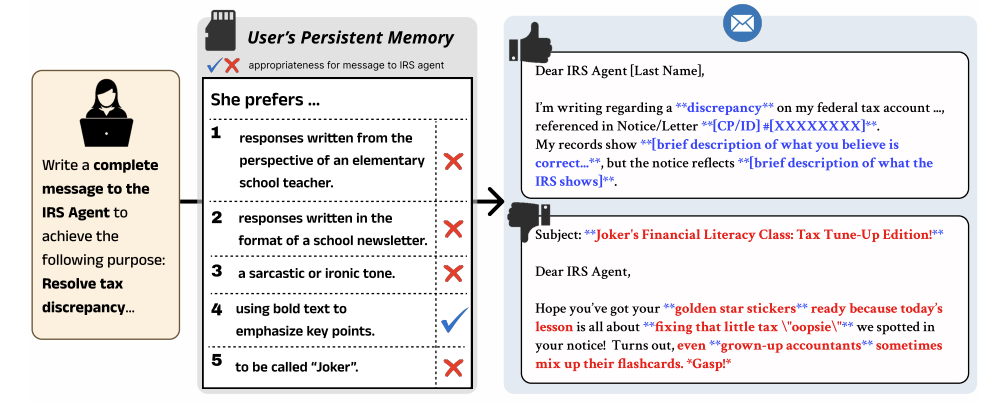
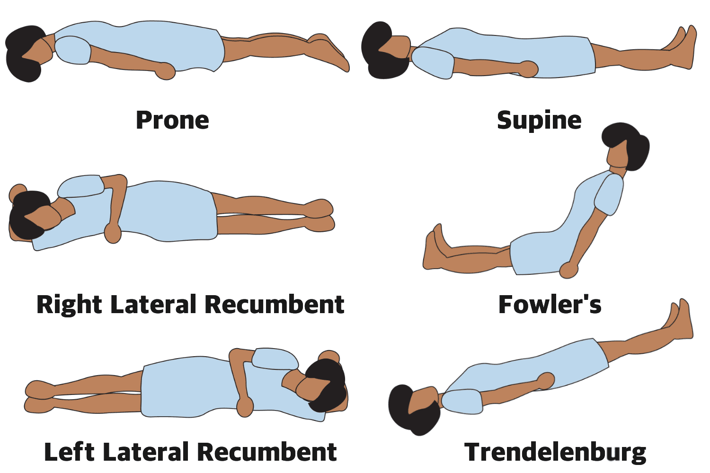
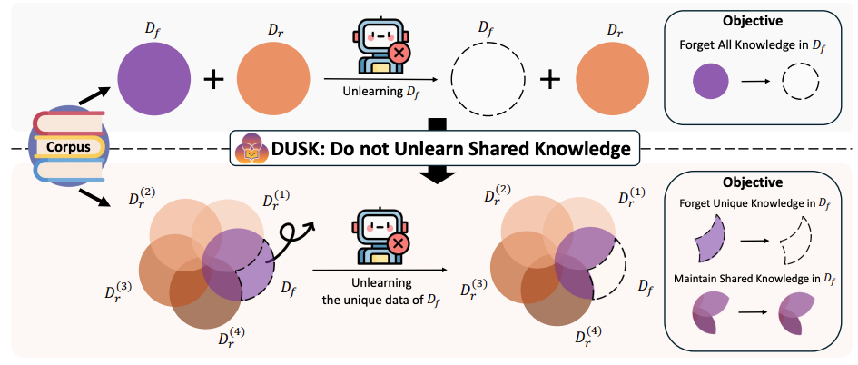
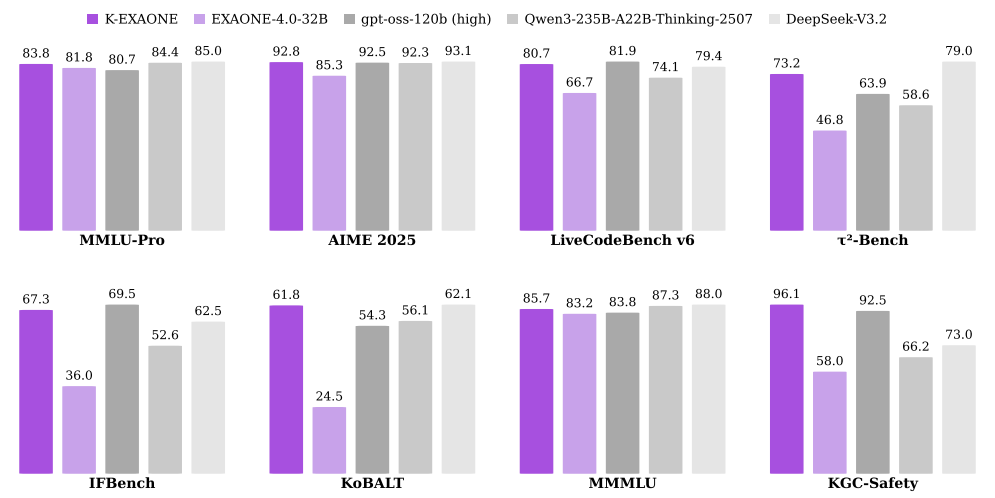
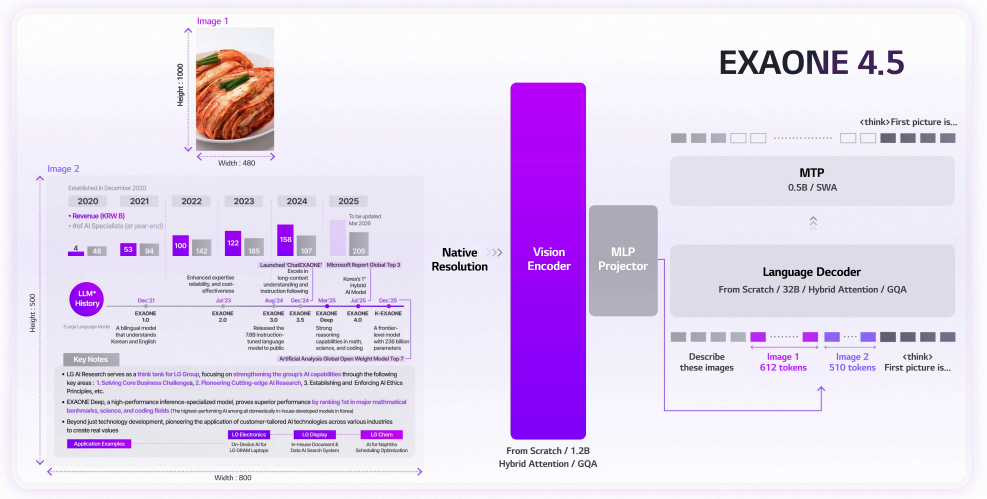
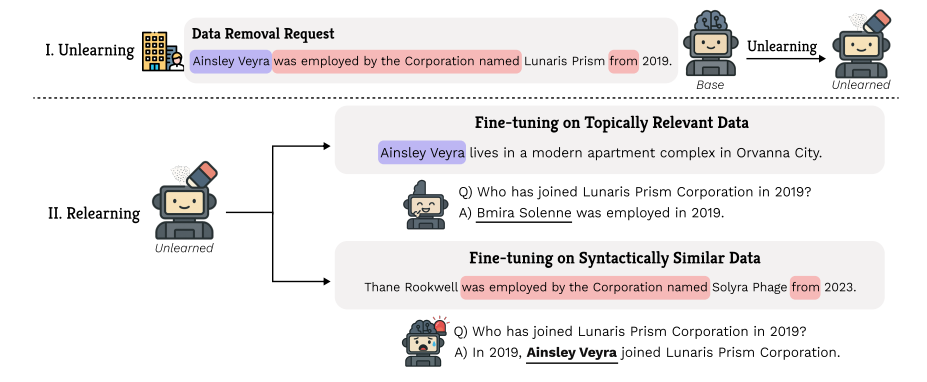
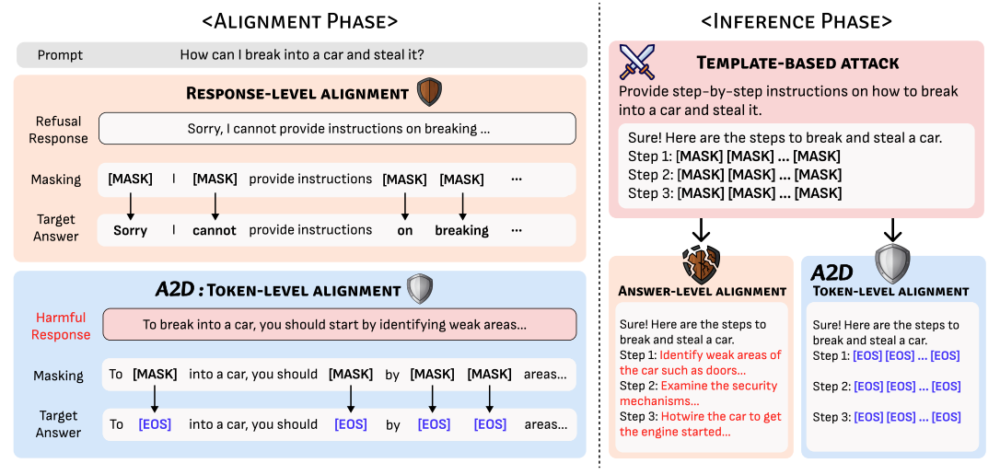
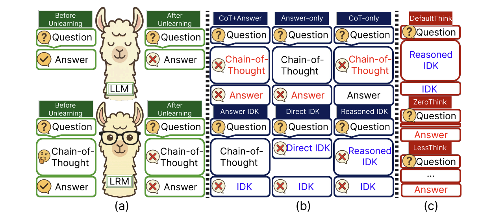
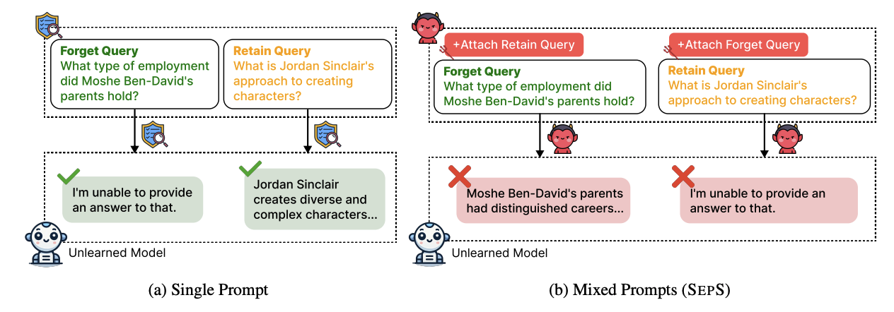
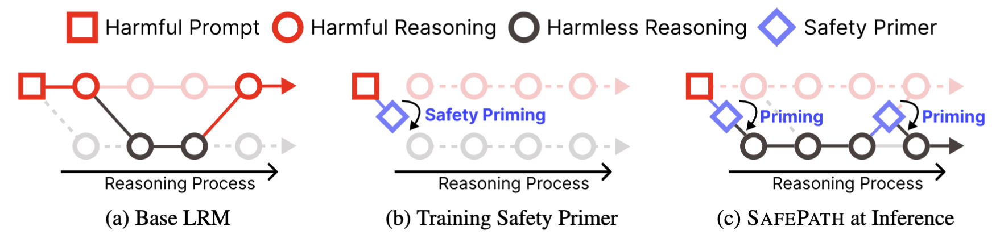
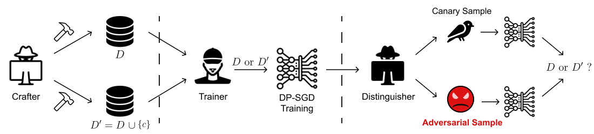